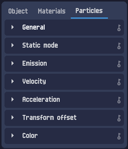
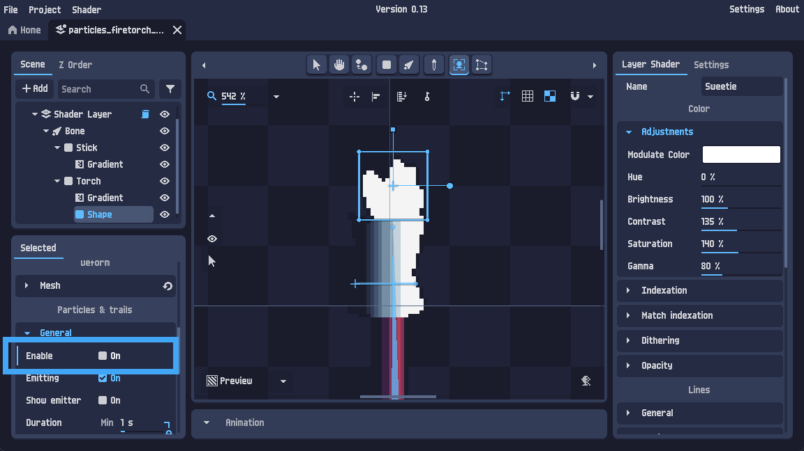
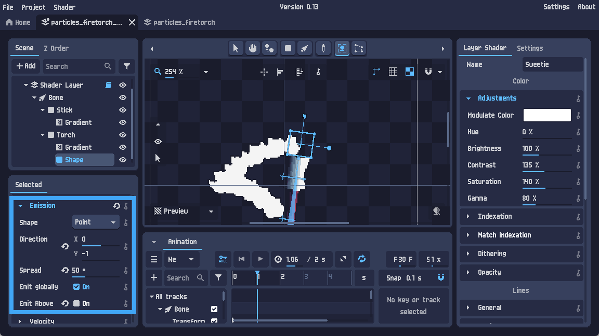
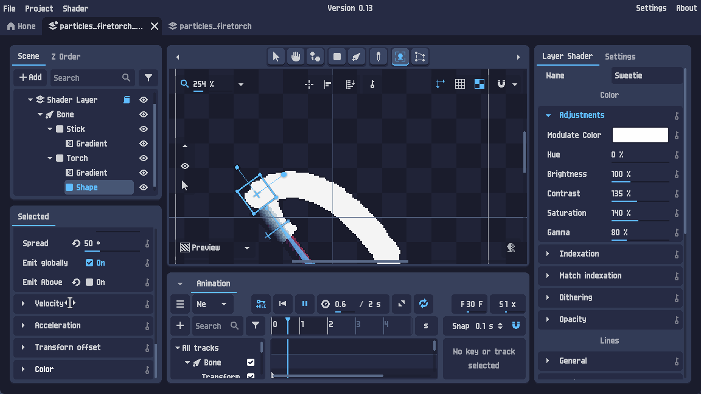

Particle systems — tűz, szikra, füst egy emitterből
A részecskerendszer (particle system) egyetlen emitter objektumból szór sok-sok apró, önállóan mozgó részecskét: szikrát, füstöt, lángot, esőt, varázslatot. Te csak a szabályokat állítod be — mennyi, merre, milyen gyorsan, hogyan zsugorodik és színeződik az élete során —, a többit a rendszer csinálja. Ebben a leckében az emittertől a kész lángeffektig jutunk — élő, procedurális demókkal.
Részecskék — mire jók?
Egy részecske egy apró, rövid életű grafikai elem (egy folt, pötty, kis sprite), amiből a rendszer sokat hoz létre és mozgat. Egyenként jelentéktelenek, együtt viszont élő jelenséget adnak: tűz, füst, szikra, eső, hó, buborék, por, varázs-csillám. A lényeg, hogy nem rajzolod meg kézzel mindet — egy emittert állítasz be, ami a megadott szabályok szerint folyamatosan ontja őket.
Az emitter sokféle objektum lehet: kép, animált kép, alakzat (shape), vagy akár 3D modell. A hivatalos lecke egy alakzatot deformál (mesh deformation), és arra tesz lángot — de a részecske-beállítások mindegyik objektumtípusnál ugyanúgy működnek.
Az emitter és a Particles fül
Hozd létre (vagy jelöld ki) az emitter-objektumot, majd a bal alsó panelen nyisd meg a Particles fület. Itt egymás alatt sorakoznak a részecske-beállítások szekciói:

General, Static mode, Emission, Velocity, Acceleration, Transform offset, Color. Felülről lefelé haladva építjük fel az effektet.Először a General szekcióban kapcsold be a rendszert: Enable: On. Itt állítod az általános paramétereket is — lifetime (meddig él egy részecske), max particles (egyszerre hány lehet), random seed, és a kibocsátás (Emitting).

Enable: On kapcsolja be a részecskéket. Mellette Emitting, Show emitter, Duration.Egy egyszerű emitter. A mennyiség a sűrűséget, az élettartam a „csóva” hosszát, az alak a születési helyet adja.
Emission — alak, irány, szórás
Az Emission szekció dönti el, hol születnek és merre indulnak a részecskék:
| Paraméter | Mit állít |
|---|---|
Shape | A kibocsátó alakja: Point (pont), kör, vonal… — ez a születési hely. |
Direction (X, Y) | Az alap-kilövési irány vektora. Pl. X 0, Y −1 = felfelé. |
Spread | A szórás szöge fokban: 0° = pontosan egy irányba, 360° = minden irányba (robbanás). |
Emit globally / Emit Above | Hogyan viszonyul a kibocsátás a réteghez / a felette lévőkhöz. |

Shape: Point, Direction X 0 · Y −1 (fel), Spread: 50°. A Y −1 a felfelé irány — innen indul a láng.Az irányt és a szórást a következő (4.) fejezet demójában élőben is állíthatod — ott a sebességgel és a gravitációval együtt látod a hatásukat.
Velocity & Acceleration
A kibocsátás után két dolog mozgatja a részecskéket: a kezdő sebesség (Velocity) és a folyamatos gyorsulás (Acceleration).
Velocity — a kezdő lendület
- Linear — egyenes vonalú kezdősebesség (a kilövési irányba).
- Angular — forgási sebesség (a részecske pörög).
- Orbital — keringés a kibocsátó körül (örvény-hatás).

Acceleration — a folyamatos erő
- Gravity — gravitáció: lefelé (vagy bármerre) húz. Tűznél jellemzően kikapcsolod vagy fölfelé állítod, hogy a láng emelkedjen.
- Linear / Radial / Tangential — állandó erő egy irányba, a középpont felé/től, illetve körkörösen (örvény).
Szökőkút: felfelé sebesség + lefelé gravitáció → felszállnak, majd visszahullanak. Robbanás: 360°-os szórás + nagy sebesség + alig gravitáció. Eső: lefelé irány + erős gravitáció. Tűz: felfelé sebesség + nulla/negatív gravitáció (felhajtóerő).
Próbáld ki a recepteket, vagy állítsd kézzel. Figyeld, hogyan hajlít a gravitáció.
Transform offset & görbék
A Transform offset szekció a részecskék megjelenését változtatja egyedileg: rotáció, méret (scale), nyírás (skew) — mindegyikhez adható egy kis véletlen variáció, hogy a részecskék ne legyenek egyformák (ez teszi élővé a füstöt, a szikrát).
Sok tulajdonsághoz tartozhat egy görbe, ami az értéket a részecske élettartama során szorozza. Így a részecske zsugorodhat vagy elhalványulhat az ideje alatt — pl. egy szikra nagyban születik, és a végére semmivé zsugorodik. A görbe vízszintes tengelye az „élet 0%→100%”, a függőleges a szorzó.
méret-szorzó 1 ┤ ▁▂▃▄▅▆▇█ Növekvő (0 → 1) │ █▇▆▅▄▃▂▁ Zsugorodó (1 → 0) ← tűzhöz, szikrához │ ▁▄▇█▇▄▁ Növekvő-zsugorodó (puff) 0 └────────────────────────► 0% élet 100%
A görbéket (méret + szín) a következő fejezet demójában élőben kapcsolgathatod.
Color — szín-átmenet az élet során
A Color szekció színezi a részecskéket. Lehet fix szín, de az igazi erő a szín-átmenet (gradient): a részecske színe az élete során végigfut egy színskálán. Ez adja a láng jellegzetes belső‐fehér → sárga → narancs → vörös → elhalványuló átmenetét.
élet: 0% ───────────────────────► 100% szín: fehér → sárga → narancs → vörös → áttetsző (forró mag) (kihűlő, eltűnő)
Ugyanaz a felfelé szóró emitter. A méret-görbe és a szín-átmenet kombinációjából egészen más effekt lesz.
Tűz: zsugorodó + tűz + fade. Füst: növekvő + füst + fade. Próbáld!
Összefoglaló & merre tovább?
A részecske-effekt felépítése egy lapon — fentről lefelé a Particles fülön:
- General: Enable: On, lifetime, max particles. (És legyen lejátszott animáció!)
- Emission: alak (Shape), irány (Direction), szórás (Spread) — hol és merre születnek.
- Velocity: kezdő lendület (linear/angular/orbital).
- Acceleration: gravitáció és állandó erők — tűznél a gravitációt vedd ki.
- Transform offset + görbék: méret/rotáció variáció, és a méret-görbe az élet során (zsugorodás).
- Color: szín-átmenet az élet mentén (a láng fehér→vörös→eltűnik).
- Első lépések 2D · Szín-indexelés · Color cycling · Dithering · Material editing
- Particle systems — itt vagy.
- Drawing — a következő (és egyben sorozatzáró) hivatalos lecke: a rajz-eszköz.
A kész effekt (a hivatalos „firetorch” láng) megtalálható a PixelOver letöltés examples/ mappájában — érdemes megnyitni és szétszedni. A nagy tanulság: a részecskerendszer nem varázslat, hanem néhány jól megválasztott szabály (mennyi · merre · milyen gyorsan · hogyan zsugorodik és színeződik) — és ezekből a fenti demókban már te is építettél tüzet.